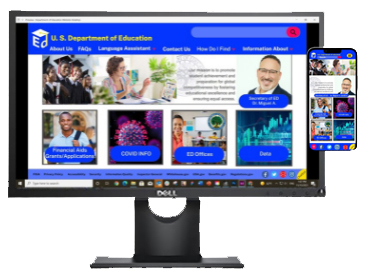

MY WORK


Project 2: US Department of Education Site Redesign
The project goal is to redesign ed.gov site with a clean and easy navigation system so users can find information quicker. I work with Colleen. an UX design student for this project. We shared some responibilites and also design the site on our own.
My Responsibilities
- User research
- User empathy
- Site design
- Wireframe/Prototype
- Usability Test

Projec 3: Cottonwood Canyons Foundation Site Redesign
Based on the user research, users are more willing to get involved with specific and special events. The project goal is to re-design the landing with this focus for the user and provide a clear and easy navigation system. This is a team project. I work with two other designers.
My Responsibilities
- User empathy-analyze user research data
- Create user personal, user journey map, and define user pain points
- Design the Style Guide and the homepage footer section
- Wireframe and prototype
- Usability test